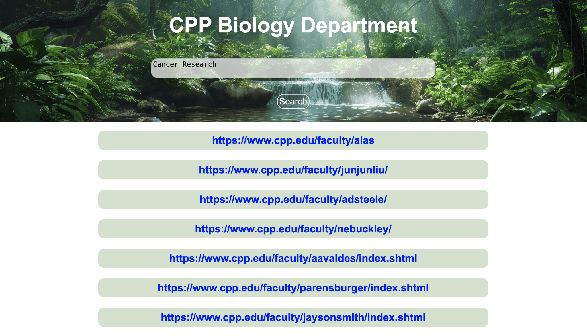

Faculty Search Engine

As a student, finding a faculty mentor can be hard.
Description
This project is a full-stack search engine that indexes faculty pages from the Cal Poly Pomona Biology Department so that students can easily find faculty based on bioinformatics or biology-related keywords. It uses web scraping, TF-IDF vectorization, cosine similarity, and Flask APIs.
Presentation
Try it for yourself
GitHub Project Repository
Features
- Crawls and scrapes faculty web pages using
- Builds TF-IDF vectors from relevant content
- Stores documents in MongoDB
- Serves a Flask API for querying
- Uses NLTK for text processing and lemmatization
- Simple front-end to search and view results
Tools Used
Search Engine
- Beautiful Soup
- Pymongo (Mongo Client)
- Urllib (URLopen)
- Seaborn (CountVectorizer)
- RE
- NLTK (WordNetLemmatizer)
- Flask
← Back to Portfolio